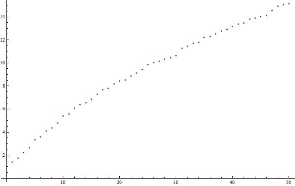

Mathematica is a language and application created by Stephen Wolfram’s company, Wolfram Research. As of Fall 2013, it is in its 9th major version. Mathematica is used for a variety of applications and has capabilities for cluster computing (essentially, having many computers run the same program with different data to solve a problem).
As in most programming languages, you can make the code as general as possible, with a variety of applications, but in the general case for Mathematica, individual programs are written to solve specific problems. As the name suggests, Mathematica is very good at all sorts of mathematical problems, from integrals and derivatives to 3D data plots to statistical analysis and more (for more, see the Wolfram site). It is a cross-platform application, meaning that it is available on Windows, Mac, and Linux, and except for special cases, you will need the Mathematica application to do anything using the Mathematica language (the CDF format - essentially an interactive PDF can be viewed without Mathematica, but Mathematica it is needed to edit CDFs).
If you are a physics student at UT, you can obtain it using a site licence paid for by the university. See the Physics Department Software Page for more.
Otherwise, if you are a UT student, various computer labs, including the PMCL in RLM have Mathematica installed already. If you are not a UT student, you will need to purchase the software from Wolfram.
Let’s say that we want to produce a very simple Mathematica document that plots the function \(\sqrt{P_n}\) where \(P_n\) is the \(n^{\textrm{th}}\) prime number starting at \(P_1=2\), for \(n\in[1,50]\).
First, we create the list of square-rooted primes:
sqrtPrimes = Table[Sqrt[Primes[n]], {n,50}]
Then, we can simply plot the list we created with:
ListPlot[sqrtPrimes]
Which gives a result that looks like:
While Mathematica may not be the best language for extremely-large scale data processing (although it has cluster capabilities which will not be discussed here), the above example hopefully indicates how easy some tasks can be in the language. We will see later how to do more complicated input (reading files, etc.) and output (graphs, tables, etc.), as well as incorporate data analysis concepts like linear regression.